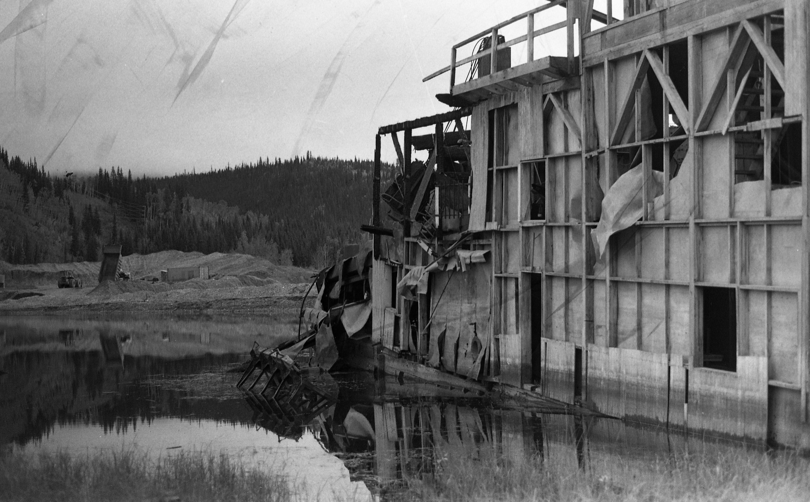
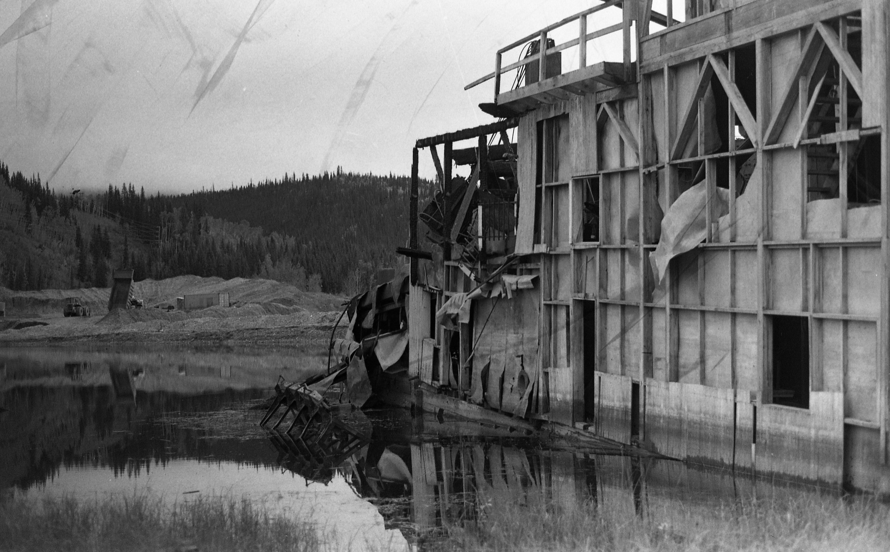
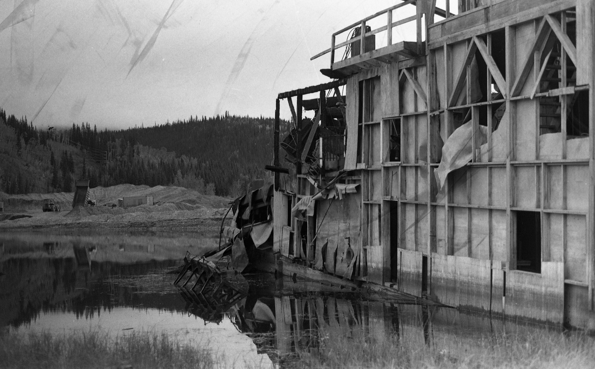

installation, 2023

dredge11[retrograde] is the culmination of a year’s-worth of learning and experiments with new technologies and techniques including visual programming, generative video, VR design, 3D modelling, photogrammetry, phytogrammetry, modular synthesis and artificial intelligence.
The piece consists of three stages or components:
35mm Photos, Digitized
Eco-processed & hand developed

Digital Video, 3mins, looping
16mm phytogram prints, digitized & heightmapped, overlaid on pointcloud model
Virtual Reality + Audio, 10mins looping
Interactive dredge11 point cloud + generative soundtrack & field recordings
Together, these pieces explore the liminal nature of the Klondike Goldfields, encapsulated by a burned-out and decaying Dredge #11, presented as an explorable and manipulable object in a 4-dimensional space, interwoven with aspects of artificial intelligence and plant-generated celluloid motifs.
This project was supported by the Yukon Government’s Advanced Artist Award and the Klondike Institute of Art & Culture.